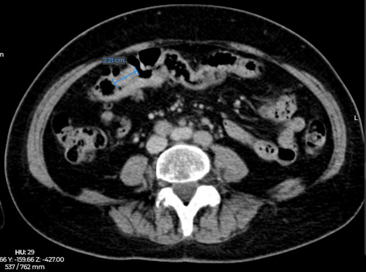

Ficha del catálogo
Cáncer colorrectal
- Sistema
- Digestivo
- Modalidad
- TC
- Región
- Colon y recto
- Dificultad
- Intermedio
Es una de las neoplasias malignas más frecuentes del aparato digestivo y en su mayoría corresponde a adenocarcinomas que surgen sobre pólipos adenomatosos. Se manifiesta con sangrado, cambio del hábito intestinal, anemia ferropénica o cuadros obstructivos. La imagen interviene en la detección, en la estadificación y en el seguimiento tras el tratamiento.
Técnica
La tomografía de tórax, abdomen y pelvis con medio de contraste intravenoso es el estudio de estadificación a distancia. Para el cáncer de recto la resonancia de pelvis con planos de alta resolución perpendiculares al eje del tumor es indispensable, porque define la profundidad de invasión, la distancia a la fascia mesorrectal y la invasión venosa extramural. La colonografía por tomografía es una alternativa a la colonoscopia para la detección.
Qué observar
- Engrosamiento parietal focal e irregular con realce, que estrecha la luz y forma hombros abruptos
- Longitud del segmento afectado, habitualmente corta en comparación con los procesos inflamatorios
- Espículas hacia la grasa pericolónica e infiltración de estructuras vecinas
- Adenopatías regionales, con atención a su forma, a su borde y a su realce más que solo a su tamaño
- Metástasis hepáticas y pulmonares, implantes peritoneales y ascitis
- Complicaciones como obstrucción, perforación contenida o fístula a órganos vecinos
Hallazgos
El tumor se ve como un engrosamiento asimétrico y nodular de la pared con realce heterogéneo, que produce una estenosis de bordes abruptos y aspecto de corazón de manzana en los estudios con contraste luminal. La grasa adyacente muestra espículas y nódulos cuando existe extensión más allá de la pared. En el recto la resonancia permite ver el tumor y su relación con la fascia mesorrectal, dato que condiciona el tratamiento neoadyuvante. El hígado es el sitio metastásico más frecuente y las lesiones aparecen hipodensas en fase portal, a menudo con realce periférico.
Perlas
En el recto lo que más pesa para decidir el tratamiento no es el estadio T aislado sino la distancia del tumor a la fascia mesorrectal y la presencia de invasión venosa extramural, por lo que ambos datos deben aparecer siempre en el informe. En el colon, ante toda estenosis corta con hombros abruptos en un paciente con anemia o sangrado, debe plantearse la neoplasia por delante de la enfermedad diverticular.
Diagnóstico diferencial
- Diverticulitis aguda
- Segmento afectado más largo, divertículos presentes e inflamación de la grasa desproporcionada respecto del engrosamiento.
- Linfoma colónico
- Engrosamiento parietal marcado con dilatación aneurismática de la luz y sin obstrucción.
- Colitis isquémica cicatrizal
- Estenosis lisa y afilada en zonas de transición vascular, con antecedente de episodio isquémico.
- Endometriosis intestinal
- Nódulo de la serosa con retracción en la cara anterior del recto o del sigmoides, en mujer en edad fértil.
- Metástasis serosa de otro primario
- Afectación desde fuera hacia dentro con implantes peritoneales asociados.
Simuladores
- Colon colapsado o mal distendido que aparenta un engrosamiento parietal focal
- Restos fecales adheridos que simulan un pólipo o una masa en la colonografía
- Válvula ileocecal prominente y lipomatosa confundida con una lesión de la pared
Por modalidad
- TC
- Es el pilar de la estadificación a distancia y de la detección de complicaciones y de recurrencia
- RM
- Es el método de referencia local en el cáncer de recto por su definición de la fascia mesorrectal y de la invasión venosa extramural
- US
- El ultrasonido endorrectal es útil en tumores muy tempranos, aunque tiene campo de visión reducido
Protocolo
Tomografía de tórax, abdomen y pelvis con medio de contraste intravenoso en fase portal a los 70 segundos y contraste oral neutro, con cortes finos y reconstrucciones coronales. En el recto se realiza resonancia con secuencias T2 de alta resolución en planos perpendiculares y paralelos al eje del tumor, más difusión, sin necesidad obligatoria de gadolinio, y con espasmolítico si no está contraindicado.
Clasificación
La estadificación se basa en el sistema TNM. La categoría T describe la profundidad de invasión desde la submucosa hasta la penetración de la serosa o la invasión de órganos vecinos, la N el número de ganglios regionales afectados y la M las metástasis a distancia. En el recto se añaden dos descriptores de gran peso pronóstico, que son el margen de resección circunferencial, definido por la distancia del tumor o del ganglio afectado a la fascia mesorrectal, y la invasión venosa extramural, visible como prolongación tumoral dentro de una vena de la grasa perirrectal.
Errores frecuentes
- Estadificar un cáncer de recto sin planos de alta resolución alineados con el eje del tumor
- Valorar las adenopatías solo por su tamaño y no por su morfología y su realce
- Confundir una estenosis neoplásica corta con enfermedad diverticular en un paciente con divertículos conocidos

cancer colorrectal adenocarcinoma fascia mesorrectal estadificacion TNM resonancia de recto colonografia